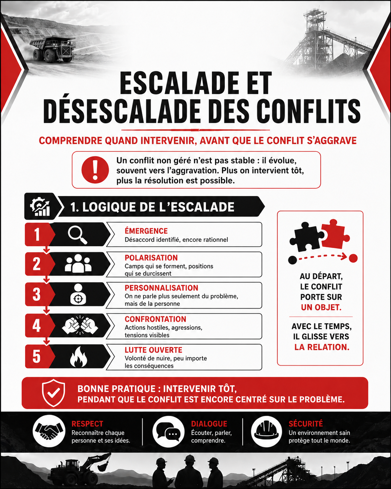
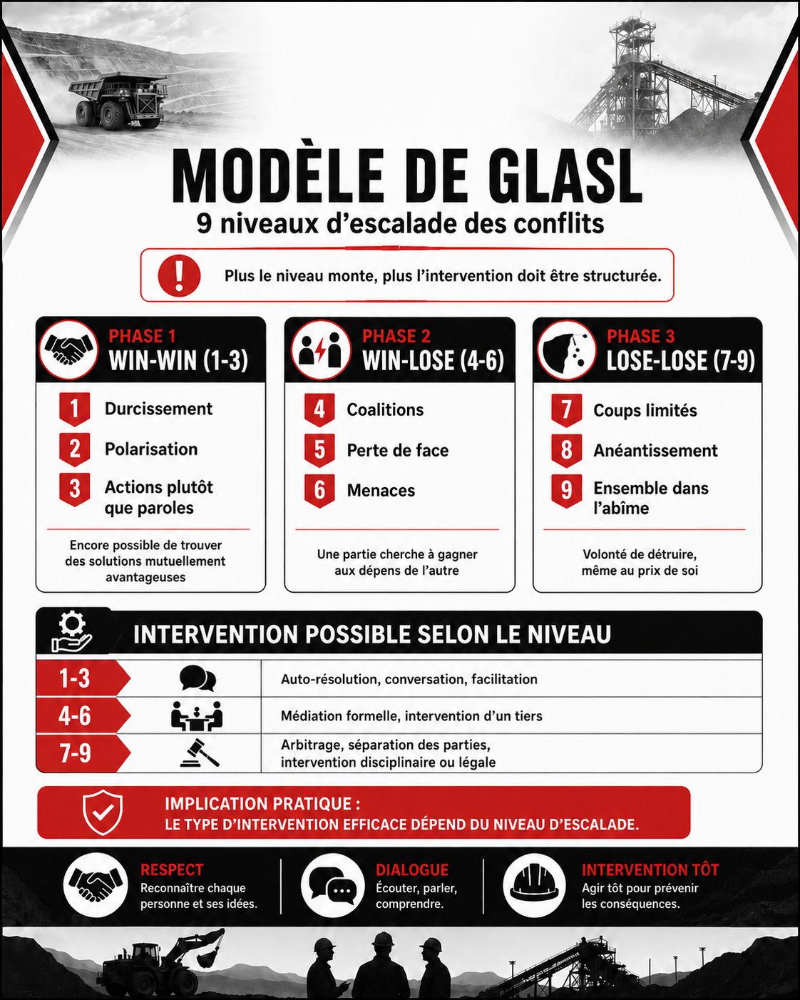
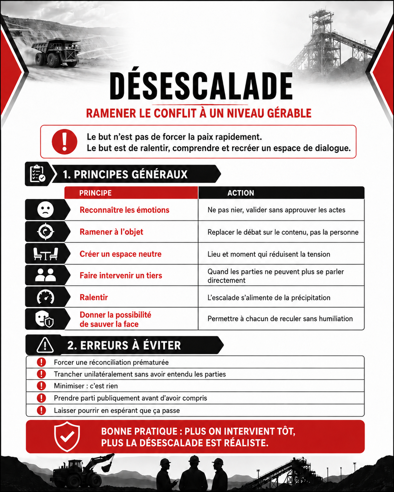
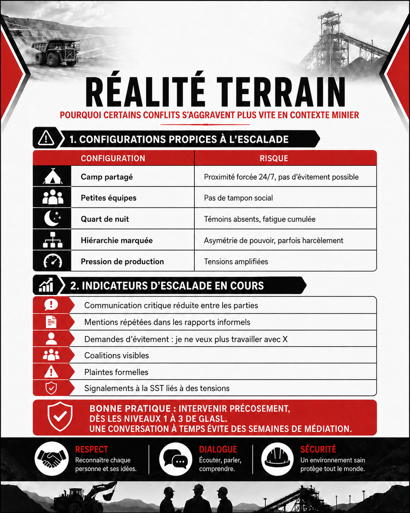

Escalade et désescalade des conflits
Table des matières
Un conflit non géré ne reste pas stable : il évolue, généralement vers l'aggravation. Comprendre les phases d'escalade (Glasl identifie 9 niveaux) permet d'intervenir au bon moment, avec les bons outils. Plus tôt = plus facile. Une fois passées certaines étapes, la médiation simple ne suffit plus.

Toucher l'image pour l'agrandirLogique de l'escalade
Un conflit naissant porte sur un objet (méthode, ressource, décision). Avec le temps et l'émotion, l'attention se déplace de l'objet vers la relation : on ne parle plus du problème, on parle de la personne.
| Phase générale | Caractéristique |
|---|---|
| Émergence | Désaccord identifié, encore rationnel |
| Polarisation | Camps qui se forment, positions qui se durcissent |
| Personnalisation | L'autre devient un obstacle, puis unpadversaire |
| Confrontation | Actions hostiles, agressions |
| Lutte ouverte | Volonté de nuire, peu importe les conséquences |
Modèle de Glasl (9 niveaux)

Toucher l'image pour l'agrandirFriedrich Glasl propose 9 niveaux d'escalade, regroupés en 3 phases
| Phase | Niveaux | Caractéristiques |
|---|---|---|
| Win-win (1-3) | 1. Durcissement, 2. Polarisation, 3. Actions plutôt que paroles | Encore possible de trouver des solutions mutuellement avantageuses |
| Win-lose (4-6) | 4. Coalitions, 5. Perte de face, 6. Menaces | Une partie cherche à gagner aux dépens de l'autre |
| Lose-lose (7-9) | 7. Coups limités, 8. Anéantissement, 9. Ensemble dans l'abîme | Volonté de détruire, même au prix de soi |
Implication pratique : le type d'intervention efficace dépend du niveau d'escalade.
| Niveau atteint | Intervention possible |
|---|---|
| 1-3 | Auto-résolution, conversation, facilitation |
| 4-6 | Médiation formelle, intervention d'un tiers |
| 7-9 | Arbitrage, séparation des parties, intervention disciplinaire ou légale |
Désescalade

Toucher l'image pour l'agrandirPrincipes généraux
| Principe | Action |
|---|---|
| Reconnaître les émotions | Ne pas nier, valider sans approuver les actes |
| Ramener à l'objet | Replacer le débat sur le contenu, pas la personne |
| Créer un espace neutre | Lieu et moment qui réduisent la tension |
| Faire intervenir un tiers | Quand les parties ne peuvent plus se parler directement |
| Ralentir | L'escalade s'alimente de la précipitation |
| Donner la possibilité de « sauver la face » | Permettre à chacun de reculer sans humiliation |
Erreurs à éviter
- Forcer une réconciliation prématurée
- Trancher unilatéralement sans avoir entendu les parties
- Minimiser (« c'est rien »)
- Prendre parti publiquement avant d'avoir compris
- Laisser pourrir en espérant que ça passe
Application en mines

Toucher l'image pour l'agrandirConfigurations propices à l'escalade en mine
| Configuration | Risque |
|---|---|
| Camp partagé | Proximité forcée 24/7, pas d'évitement possible |
| Petites équipes | Pas de tampon social |
| Quart de nuit | Témoins absents, fatigue cumulée |
| Hiérarchie marquée | Asymétrie de pouvoir, parfois harcèlement |
| Pression de production | Tensions amplifiées |
Bonne pratique : intervenir précocement, dès les niveaux 1-3 de Glasl. Une conversation à temps évite des semaines de médiation.
- Communication critique réduite entre les parties
- Mentions répétées dans les rapports informels
- Demandes d'évitement (« je ne veux plus travailler avec X »)
- Coalitions visibles
- Plaintes formelles
- Signalements à la SST liés à des tensions
Documents et outils
| Document | Type | Source |
|---|---|---|
| Glasl, F. modèle d'escalade en 9 niveaux | Cadre théorique | Bibliographie |
| Modèle Thomas-Kilmann (TKI) | Instrument | Outils RH |
| Guide CCHST sur la gestion des conflits | cchst.ca | |
| Procédure interne de gestion de conflit | À élaborer | Conseille |